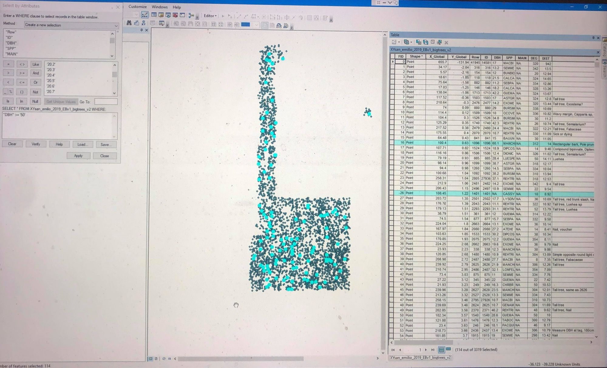
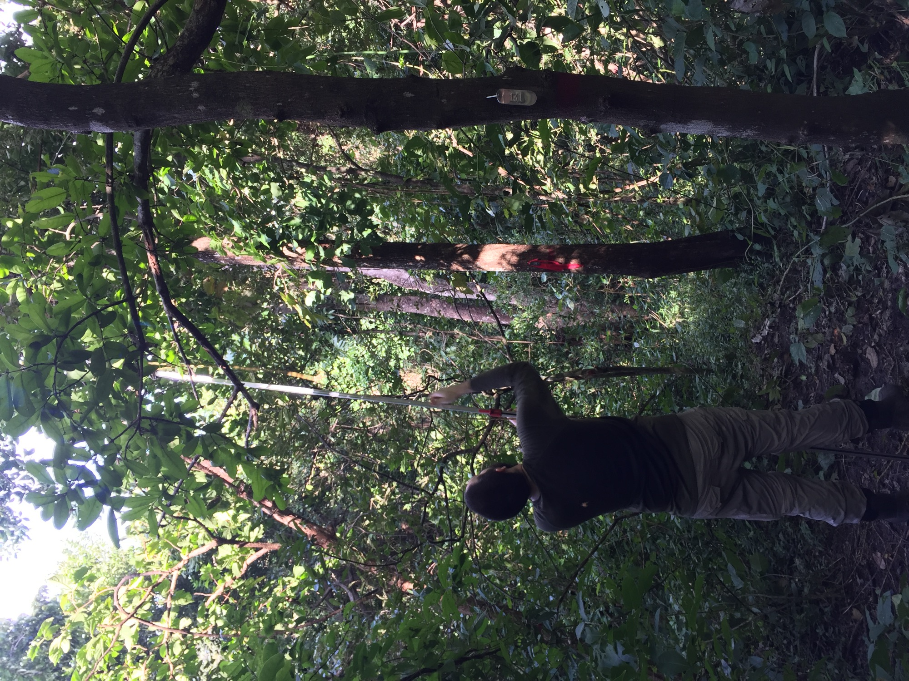
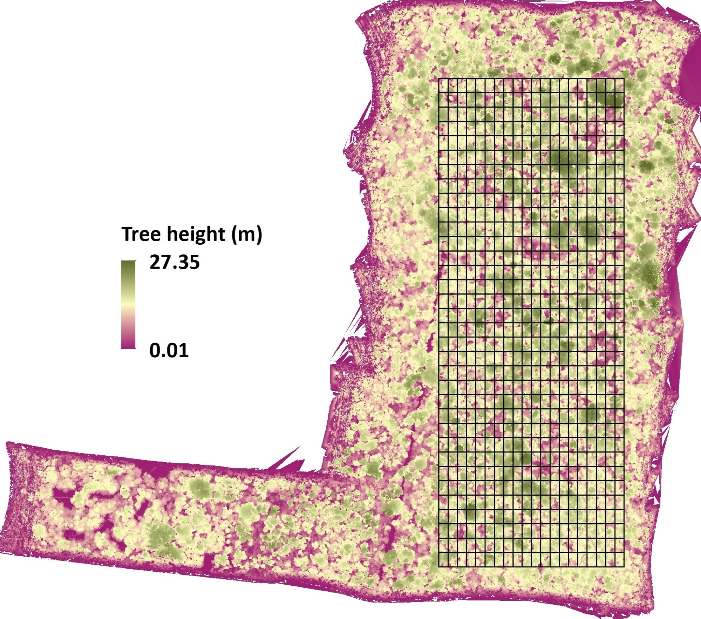
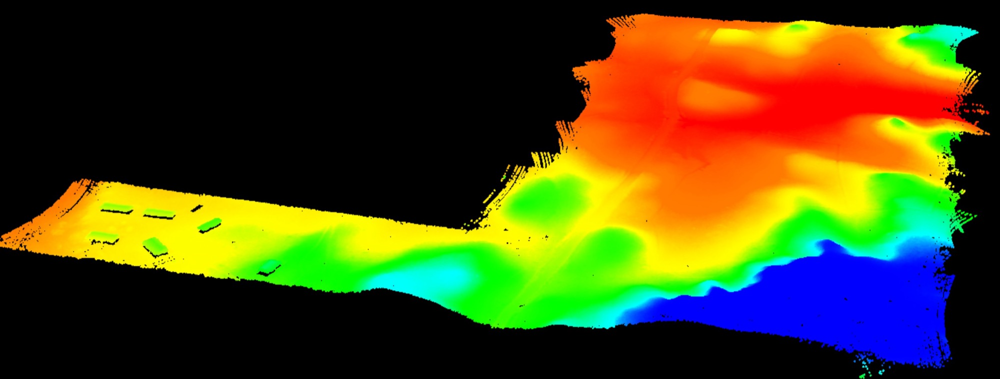
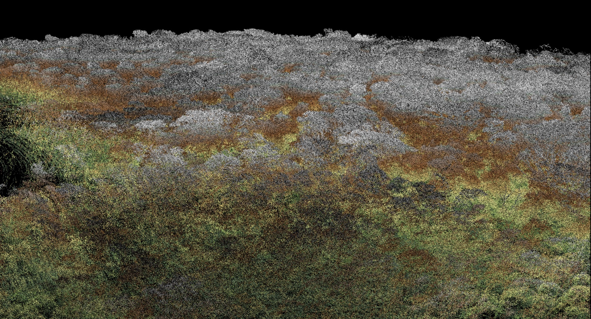
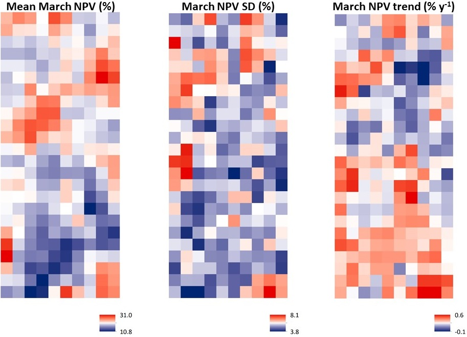

Location and Setting
The San Emilio Forest Dynamics Plot is located in ACG Sector Santa Rosa, northwestern Costa Rica. It represents a seasonally dry tropical forest system with mean annual rainfall near 1500 mm and strong wet-dry seasonality.
Long-term Tropical Dry Forest Monitoring
A long-term monitoring site in the Area de Conservacion Guanacaste (ACG), Sector Santa Rosa, Costa Rica, supporting repeated censuses and trait-informed analyses of tropical dry forest dynamics.

Overview
The San Emilio Forest Dynamics Plot is located in ACG Sector Santa Rosa, northwestern Costa Rica. It represents a seasonally dry tropical forest system with mean annual rainfall near 1500 mm and strong wet-dry seasonality.
ForestGEO site documentation describes substantial age heterogeneity within the plot, including old secondary forest and mixed-age sectors across ridge, slope, mesa, and valley habitats. This heterogeneity helps interpret localized differences in drought sensitivity.
History Timeline
George Stevens and Stephen Hubbell conducted foundational census work, mapping woody stems with diameter records that established the long-term baseline.
Brian Enquist and collaborators completed recensus and quality-control workflows, preserving continuity with the original protocol.
The third census expanded demographic comparability and supported long-interval analyses of floristic and functional change.
A fourth census led by Adam Chmurzynski mapped stems including lianas at >=1 cm diameter across 15.64 ha, linking the site to current ForestGEO standards.
Key Findings
Multi-census analyses report directional shifts in functional composition and diversity across roughly three decades. Observed patterns are consistent with climate and successional context, but interacting drivers remain plausible and should be treated as joint hypotheses.
Remote sensing work reported increasing chronic and episodic drought signals and phenology shifts, while also noting resilience in annual productivity metrics over the observed period. Covariation does not establish a single causal mechanism.
The combination of repeated censuses, mapped stems, and species-level records creates a rare long time series for tropical dry forest research, supporting hypothesis testing and uncertainty-aware forecasting.
Findings Dashboard
Explore concise finding summaries linked to specific census intervals. This dashboard emphasizes observational patterns and uncertainty-aware interpretation.
Publications
Includes the publications you sent and supporting metadata for easy extension.
Media





Conceptual placeholder chart for quick narrative framing. Replace with project-derived figures.
ForestGEO
Reference plot metadata and network context through the ForestGEO San Emilio listing.
Open ForestGEO San Emilio pageJump directly to the San Emilio section resources and broader ForestGEO network.
Contact
For collaboration, data context, or methods discussion related to the San Emilio Forest Dynamics Plot, contact the project team through listed addresses and institutional channels.
This page summarizes publicly referenced plot and publication information and intentionally uses non-causal language where inference uncertainty remains.